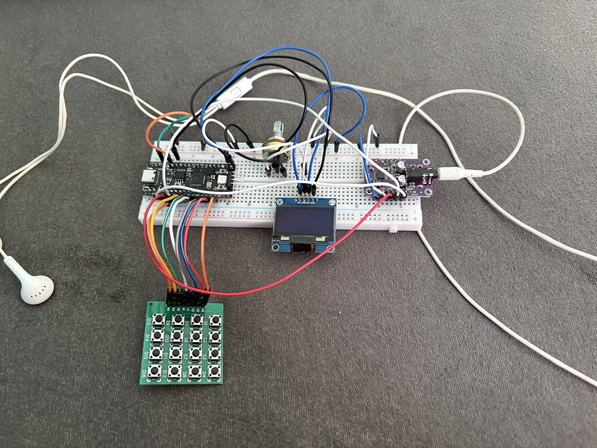

Nowość

Hardware Synthesizer & DSP
W pełni cyfrowy, sprzętowy syntezator czasu rzeczywistego oparty na mikrokontrolerze RP2040. Projekt wykorzystuje architekturę dwurdzeniową: Core 1 dedykowany jest wyłącznie do przetwarzania sygnału audio (DSP) i obsługi I2S, natomiast Core 0 asynchronicznie zarządza interfejsem użytkownika OLED, obwiednią ADSR oraz skanowaniem matrycy klawiatury.
C++
RP2040
I2S Audio